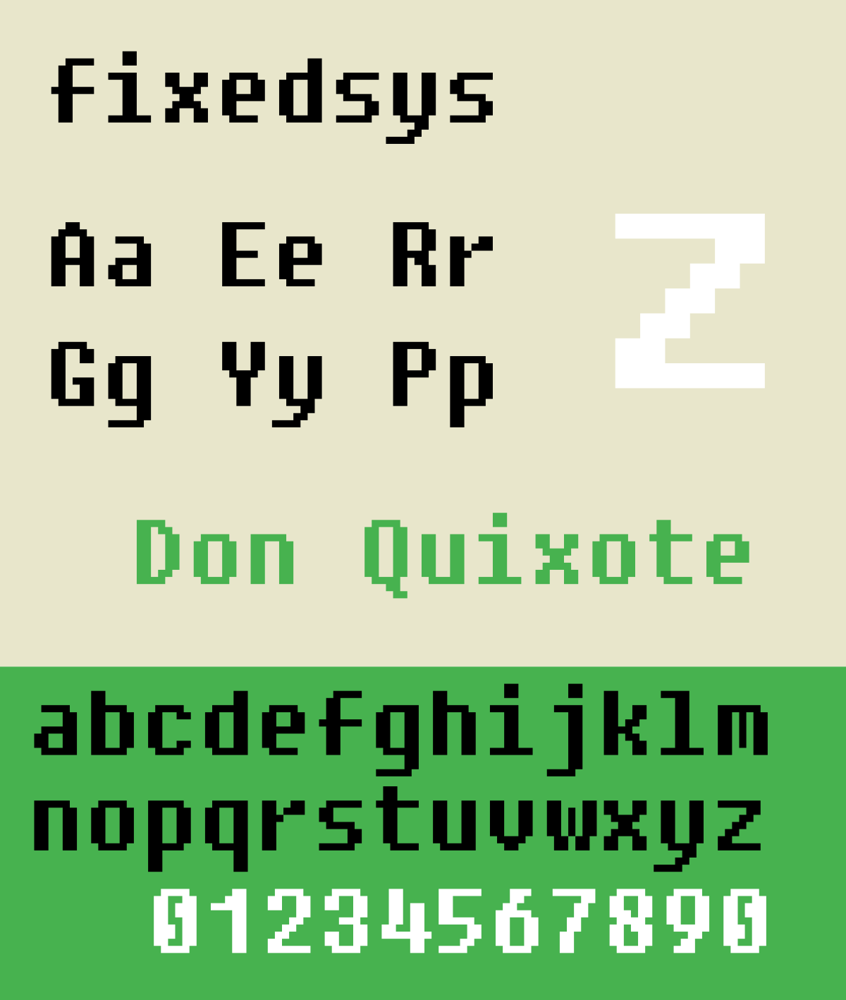

Retro UI
This is just an exploration based on old retro UIs
I have no idea what to do with this project. It really started as a fun way to do some retro looking cards on a dot matrix pattern background.
I'm sure at some future time I'll acutally use this and create proper content for this as the front-end styling.
Another super cool project I saw while working/researching for this project. System.css is a CSS library to help create the look of System 1.
Font inspiration
 The font inspiration is based off the original Windows 1.0 font called Fixedsys. The actual typefaced used I here is called Fixedsys Excelsior by Darien Valentine as a public domain and creative commons zero dedication.
The font is the oldest font in Microsoft Windows and was the system font for Windows 1.0 and 2.0. It was last used on Windows as the default font for Notepad up until Windows ME in 2000.
The other font choice I was considering was the Chicago font that was used in early Mac systems.
Style Inspiration
Another style inpiration for this style was coping the a lot of the visual UI of the original Apple operating system Sytstem 1

I used a similar looking header for the top level navigation with the headings "file", "edit", "view", and "special". These menu navigation links don't actually go anywhere now, but I can see it being used in a future project.
Style Inspiration
The primary inpsiration of this style is from the website https://lynn.github.io/kumdor/ who did a english translation of the game "The Sword of Kumdor” (クムドールの剣)"

I love the dot matrix look of the textures used in the game and on the website that Lynn created. On top of the additional skewmorphic shadow effects that they used with a clever inverted dot pattern.
0/7 exp
90 spc
A monster appear!
Eff is casting a spell!
9pts of damage to your opponent!
Talk/Look
Inventory
Spell
Keyboard
Score
System